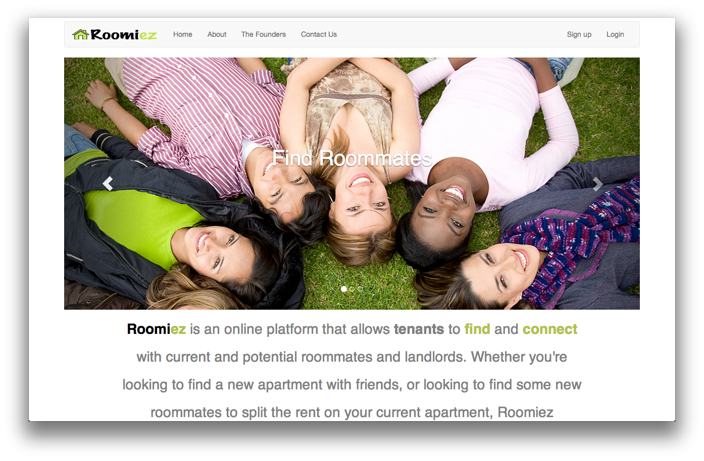
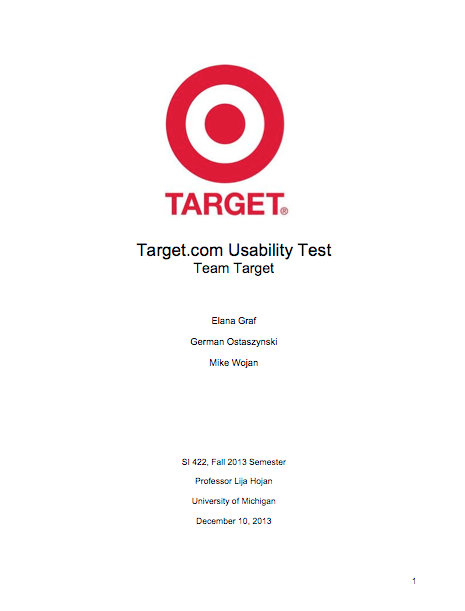

Projects

Roomiez
Rommiez allows you to connect and find other roomates and landlords!

Target.com Usability Test
This project analyzes Target.com. Using different methods, it studies the customer's shopping process and website's different tasks. This usability tests explains mentioned process and how the website can be improved to maximaze the customer's experience.

VIM: Getting Started
Giving back to the community is extremely important. "VIM: Getting Started" is an introductory tutorial to VIM, one of the most used text editors among web developers and Ruby programmers.